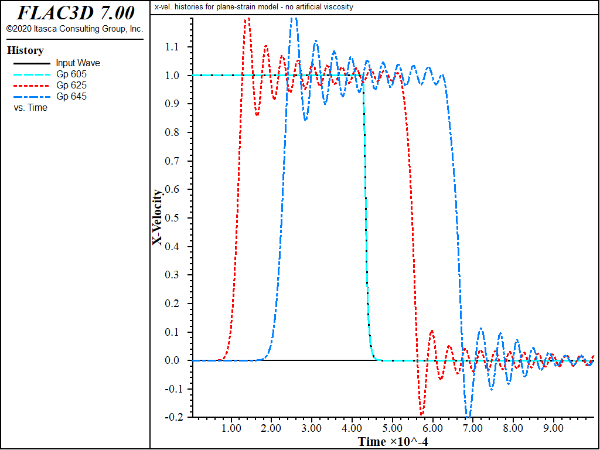
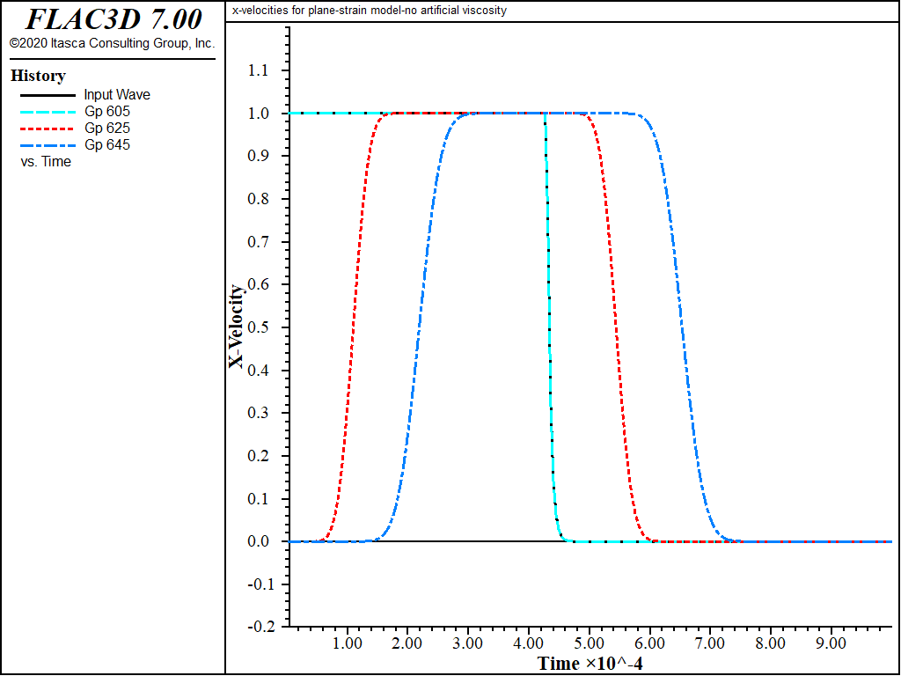

带陡峭波前和人工黏性的速度波
注意
要在 FLAC3D 中查看此项目，请使用菜单命令 。选择“Dynamic/ArtificialViscosity”并选择“ArtificialViscosity.f3prj”以加载。 该项目的主数据文件见本示例末尾（main data file）。其余数据文件可在项目中找到。
这是一个说明 人工黏性（Artificial Viscosity）影响的小示例。在平面应变条件下，具有 陡峭速度波前的膨胀波在网格单元柱中传播，并 采集两个位置的速度时程，以说明人工黏性 如何平滑波的响应。
图 1（Figure 1） 显示了不含人工黏性的模型的响应。施加的波由黑色实线表示，它也对应于 网格点 605 的运动。当波通过网格点 625 和 645 时，速度 历史显示出响应中的振荡。这是由于分辨陡峭波前时的离散化误差所致。


图 1：不含人工黏性的平面应变模型的 x 方向速度时程。
图 2（Figure 2） 显示了含人工黏性的模型的响应。由波前通过引起的振荡已被消除。


图 2：含人工黏性的平面应变模型的 x 方向速度时程。
参考文献
Wilkins, M. L. “Use of Artificial Viscosity in Multidimensional Fluid Dynamic Calculations,” in Journal of Computational Physics, 36, 281-303 (1980).
数据文件
av.dat
;---------------------------------------------------------------------
; 具有陡峭波前的速度波、人工黏性
; 第 1 部分——不采用人工黏性，参见 av.dat
;---------------------------------------------------------------------
model new
fish automatic-create off
model title "x-velocities for plane-strain model-no artificial viscosity"
model config dynamic
; 创建网格单元
zone create brick size 150 1 3 ...
point 0 0.019 0 0 point 1 10 0 0 ...
point 2 0.019 0.019 0 point 3 0.019 0 0.20
; 分配本构模型和属性
zone cmodel assign elastic
zone property shear=34.3e6 bulk=58.6e6 density=2.8
; 边界条件
zone gridpoint fix velocity-z range union position-z 0 position-z 0.2
zone gridpoint fix velocity-y range union position-y 0 position-y 0.019
zone face apply quiet-normal range position-x 10
zone face apply quiet-strike range position-x 10
fish define wave
wave = math.exp(-0.1842e06*(zone.dynamic.time.total-430.e-06))
if zone.dynamic.time.total<430.e-06 then
wave = 1.0
end_if
if zone.dynamic.time.total<1.0e-06 then
wave = 1.0e-6 * zone.dynamic.time.total
end_if
end
zone face apply velocity-x=1 fish=wave range position-x 0.019
; 记录历史
history interval=5
model history name='time' dynamic time-total
fish history name='wave' wave
zone history name='vel1' velocity-x gridpointid 605
zone history name='vel2' velocity-x gridpointid 625
zone history name='vel3' velocity-x gridpointid 645
; 启用人工黏性
zone dynamic damping artificial-viscosity 1 1
; 设置为大应变模式，并求解至 1e-3
model large-strain on
model solve time-total 1e-3
model save 'avisc'
| 这些内容对您有帮助吗？… | FLAC3D © 2019, Itasca | 原文更新于 2020 年 10 月 8 日 |
| 版权与免责声明 | ||